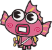
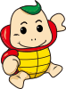

LIVE
・ 神センス！スタートタイミング「0.15」チャレンジ
🔊


神センス！ Boat Racer Start Timing
スタートタイミング
「0.15」
チャレンジ
観客の皆さんは QR から
予想投票にご参加ください！
予想投票はこちら
/vote
誰が神スタートを決める？ お客さんは優勝を予想投票！
Odds ／ 優勝予想
R1
枠
挑戦者 ／ 投票
票
オッズ
総投票
0
票
● 投票受付中
スタート勝負！ 大時計が消えたら感覚でPUSH
0 / 0 完了
結果発表 ／ 0秒にいちばん近い神スタートは？
Result ／ 着順
R1
枠
挑戦者
ST
オッズ
🎁 Prize ／ 商品プレゼント
—
×0.0
結果発表
WHO GOT THE 神スタート ?
● 接続中